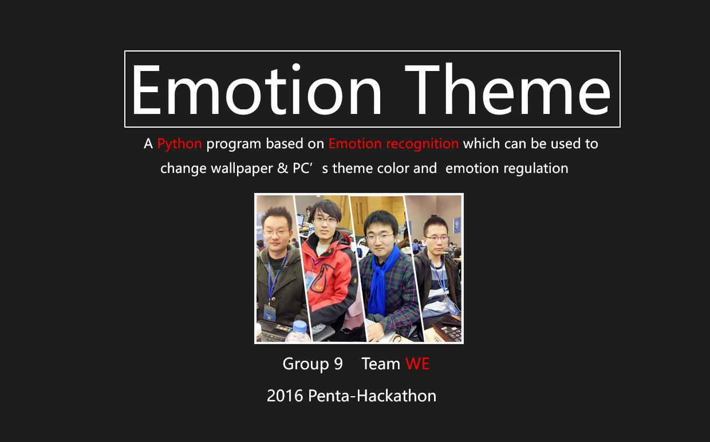

A student major in Software Engineering
Loving movies, football and enjoy reading books for fun
In this section, I'd like to introduce some of my works during my university study.
This works have witnessed the growth of my programming skills.
Emotion Theme

Emotion Theme is A Python program based on Emotion recognition which can be used to
change wallpaper and PC’s theme color and emotion regulation.It is a project developed during
2016 Microsoft Penta-Hackathon in Zizhu Shanghai and the other three contributors are ZhanChen,
DongLiang and DangYingming. It is a great honor to be with them and we have made this idea come true
in just 24 hours.
Autoer is an app designed to be a driver helper, which can be used to bind car and manage its information, make an appointment to refuel, play music, analysis data statistics, read News, weather and maintenance information.
This is my summer vacation homework and costs me two months to implement. During this period, I am also gradually become familiar with android development.
Diaosi Hero is a shooting game based on Unity 3D. In this game, the player can use the gun to shoot zombies and the shooting moment, death and sreaming will all accompanied by sound.
There is also blood bottles randomly set up on the ground which can be used to prolong the player's life. The zombies will keep coming down from the three pyramids and run towards you, be careful!! It is my first time to use Unity, so I choose to follow a course in the Coursera. If you want to preliminary
learn about Unity, I strongly recommend this course to you.
This is a Data Visualization Analysis Report based on the Chinese Football Super League, which is also my interest. In this report, I use
E-charts with javascript to draw graphs and you can click See PDF to read the whole
report written in chinese. This is a kind of present work just for fun. And my next goal is to design a evaluation model based on big data which can
predict the performance of a player in a football match or even simulate the process of a real football match.